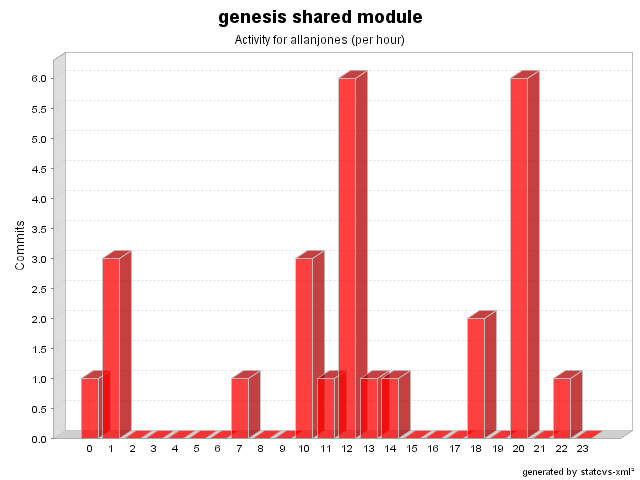

| Login: allanjones Fullname: allanjones Revisions: 26 Lines of Code: 376 Added Lines of Code: 465 Lines of Code per Change: 14.5 |

| Date | Author | File/Message |
|---|---|---|
| 8/31/06 7:41 AM | allanjones | Removed unnecessary code
(1 Files changed,
5 Lines changed) src/net/java/dev/genesis/helpers/EnumHelper.java 1.2
(+5
-8)
|
| 8/26/06 12:36 PM | allanjones | Removed unnecessary import
(1 Files changed,
0 Lines changed) src/net/java/dev/genesis/util/GenesisUtils.java 1.6
(+0
-1)
|
| 7/25/06 6:59 PM | allanjones | Support for Java 5 Enum (Issue #346) and minor bugs resolved in Swing Binder classes
(2 Files changed,
139 Lines changed) src/net/java/dev/genesis/helpers/EnumHelper.java 1.1 added 134 src/net/java/dev/genesis/hibernate/EnumType.java 1.2
(+5
-4)
|
| 1/4/06 10:16 AM | allanjones | Issue #214. Interfaces for annotations created. Support for untyped, typed and java 5 annotations.
(1 Files changed,
19 Lines changed) src/net/java/dev/genesis/util/GenesisUtils.java 1.5
(+19
-1)
|
| 12/17/05 12:46 PM | allanjones | merge from 2.3-RC3
(3 Files changed,
26 Lines changed) src/net/java/dev/genesis/paging/hibernate/CriteriaPager.java 1.4
(+6
-2)
src/net/java/dev/genesis/paging/hibernate/QueryPager.java 1.4
(+5
-1)
src/net/java/dev/genesis/command/hibernate/AbstractHibernateCommand.java 1.6
(+15
-6)
|
| 2/19/05 2:17 PM | allanjones | Issue #195. Added generic scripting support. Some built-in engines: jxpath, javascript, beanshell and el.
(1 Files changed,
10 Lines changed) src/net/java/dev/genesis/util/GenesisUtils.java 1.4
(+10
-6)
|
| 1/13/05 12:01 AM | allanjones | Issue #57. DataProvider now supports widgetName: e.g.: @DataProvider widgetName=someName objectField=someField indexField=someIndex Issue #70. DataProvider supports read-only widgets e.g.: @DataProvider widgetName=someName Issue #51. DataProvider now handles indexFields. The sequence is that clearOn conditions are evaluated, then callWhenConditions, and then the indexes fields are evaluated. (1 Files changed, 16 Lines changed) src/net/java/dev/genesis/reflection/FieldEntry.java 1.4
(+16
-2)
|
| 1/9/05 10:03 AM | allanjones | Issue #58. Improved criteria order-by to support several clauses. @Criteria <persistentClass> order-by=property1, property2 desc, ..., propertyN asc (1 Files changed, 9 Lines changed) src/net/java/dev/genesis/command/hibernate/CriteriaCommandExecutor.java 1.7
(+9
-6)
|
| 1/1/05 11:30 AM | allanjones | Issue #58. Added order-by to criteria annotation syntax: @Criteria [<fully qualified class name> [order-by=<some property> [asc|desc]]] e.g.: @Criteria com.xyz.Foo order-by=bar desc (1 Files changed, 21 Lines changed) src/net/java/dev/genesis/command/hibernate/CriteriaCommandExecutor.java 1.6
(+21
-7)
|
| 10/27/04 8:35 PM | allanjones | Issue #63. Fixed. Page indexes are 0-based
(3 Files changed,
5 Lines changed) src/net/java/dev/genesis/paging/hibernate/CriteriaPager.java 1.3
(+2
-2)
src/net/java/dev/genesis/paging/PageImpl.java 1.2
(+1
-1)
src/net/java/dev/genesis/paging/hibernate/QueryPager.java 1.3
(+2
-2)
|